全站各頁成品稿總覽 稿 v2.83・2026-11-21
一頁看完整個網站：依實際流程排好每一頁，每頁有標號（P01、P02…；全站共用元件 G1…），標注時只要講標號。畫面是現行已實作的畫面（程式 1.26.39）的真實截圖，全部假資料；沒截到的狀態寫明原因並列出對應的設計稿，不用稿補圖。公開 repo，不含任何真實學生資料。
怎麼標注
- 用標號回報：例「P09 手機版，待處理清單太擠」「P04 補考卡」。
- 每頁有「現行畫面」（截圖）、「狀態」（這頁有哪些畫面）、「對應稿」（哪份設計稿、版號）、「與稿不一致」。
- 截圖寬度：1280＝桌機、375＝手機。平板 768 本版未截（見文末〈本版限制〉）。
使用流程
P01 資料夾設定→P02 首次設定→P03 模擬考列表→P04 新增模擬考→P05～P10 六步驟→P03
P03→P14～P19 共用設定｜P20～P22 補考｜P23 授權P24 隱私
頁面總表
| 標號 | 頁面 | 現行截圖 | 對應稿 |
|---|
| P01 | 資料夾設定 | 有 1 張 | 不支援瀏覽器提示稿 v2.65；G16-G34介面總稿 G16・G24；G37首次使用精靈稿 |
| P02 | 首次設定（6 步精靈） | 有 1 張 | G37首次使用精靈稿 v2.50；D157 |
| P03 | 模擬考列表 | 有 2 張 | 模擬考列表與設定畫面包稿 v2.74；D163、D166 |
| P04 | 新增模擬考 | 有 1 張 | H0品牌與補考佔位稿 v2.81；每場考試開始時間稿 v2.79（日期欄）；模擬考列表與設定畫面包稿 v2.74 |
| P05 | 考試步驟 ① 考試設定 | 有 1 張 | 原型.html；每場考試開始時間稿 v2.79；G修正總稿 |
| P06 | 考試步驟 ② 考試名單 | 有 2 張 | 原型.html；G16-G34介面總稿；對稿-I-2a與I-3.md |
| P07 | 考試步驟 ③ 教室設定 | 有 1 張 | G16-G34介面總稿；G修正總稿；設計員改稿包小稿 v2.70（座位上限） |
| P08 | 考試步驟 ④ 標示與抽離規則 | 有 1 張 | 座位表標示與統計表稿 v2.76；原型.html |
| P09 | 考試步驟 ⑤ 排座與預覽 | 有 2 張 | 原型.html；座位表標示與統計表稿 v2.76；對帳與預覽小稿 v2.77 |
| P10 | 考試步驟 ⑥ 下載（含考前對帳） | 有 1 張 | G35考前對帳稿 v2.78；對帳與預覽小稿 v2.77；匯出檔樣式規格稿 |
| P11 | 分科考試步驟 ③④⑤（教室與自習空間、排座模式與方案、時段教室與座位） | 未截 | G16-G34介面總稿；G36自習參考座位稿 v2.68；DESIGN §10.14 |
| P12 | 預備教室與抽離 | 未截 | G16-G34介面總稿；原型.html |
| P13 | 考生查詢（選用） | 未截 | 原型.html（選用功能設定頁 C 區） |
| P14 | 共用設定 · 學生名單 | 有 2 張 | 模擬考列表與設定畫面包稿 v2.74 |
| P15 | 共用設定 · 班級資料 | 有 1 張 | 模擬考列表與設定畫面包稿 v2.74 |
| P16 | 共用設定 · 學校與表頭 | 有 1 張 | 原型.html；G修正總稿 |
| P17 | 共用設定 · 教室清單 | 有 1 張 | 設計員改稿包小稿 v2.70；G16-G34介面總稿 |
| P18 | 共用設定 · 節次與時長 | 有 1 張 | 原型.html（v2.18 時間表式）；設計員改稿包小稿 v2.70（還原預設） |
| P19 | 選用功能 | 有 1 張 | 原型.html（C 區） |
| P20 | 補考 · 場次列表 | 有 1 張 | 補考稿 v2.84（S-1、S-2） |
| P21 | 補考 · 新增補考場次 | 有 1 張 | 補考稿 v2.81（S-2） |
| P22 | 補考 · 七步驟工作區與儀表板 | 未截 | 補考稿 v2.81（S-3～S-9）；D176、D180 |
| P23 | 使用授權 | 有 1 張 | （無專屬稿） |
| P24 | 隱私權政策 | 有 1 張 | 不支援瀏覽器提示稿 v2.65（D53 例外）；（無專屬稿） |
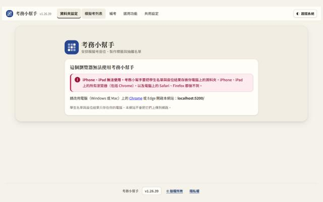
P01 不支援的瀏覽器（桌機 1280）
狀態未選資料夾／找不到上次資料夾（重新連結、搬到新位置）／拖放中／不支援的瀏覽器（本張）／更換資料夾對話對應稿不支援瀏覽器提示稿 v2.65；G16-G34介面總稿 G16・G24；G37首次使用精靈稿
與稿不一致／備註：未逐項核對。本張是記憶體模式截的「不支援」狀態；一般 Chrome 的「選擇資料夾」畫面未截（需真實資料夾授權）。
P02首次設定（6 步精靈）
route: wizard
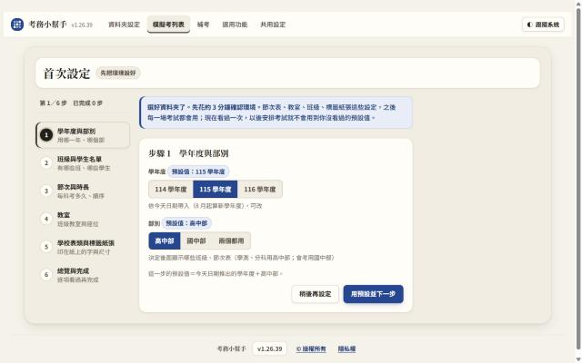
P02 步驟 1 學年度與部別
狀態步驟 1 學年度與部別／2 班級與名單／3 節次與時段／4 教室／5 學校表頭與標籤紙／6 總覽與完成；稍後再說對應稿G37首次使用精靈稿 v2.50；D157
與稿不一致／備註：只截步驟 1，2～6 未截。
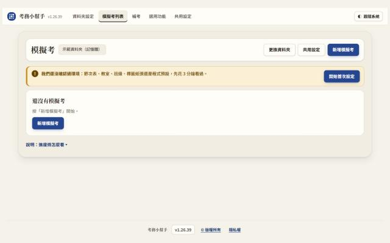
P03 空列表＋未確認環境黃條（1280）
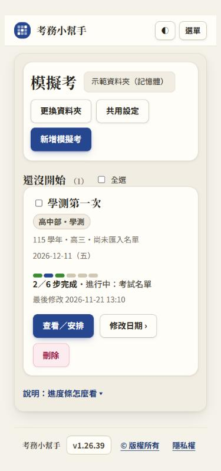
P03 有一場考試（375）
狀態空／有考試（還沒開始、進行中、已經結束）／批次選取與刪除／資料夾找不到錯誤條／環境未確認黃條對應稿模擬考列表與設定畫面包稿 v2.74；D163、D166
與稿不一致／備註：未逐項核對（375 無橫向捲軸，已量 scrollWidth＝375）。
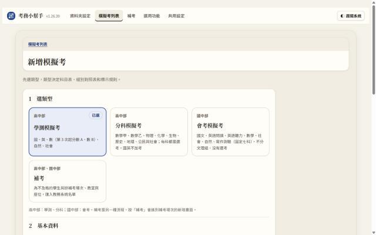
P04 選類型（1280，首屏）
狀態選類型（學測／分科／會考／補考）→ 基本資料（學年度、學期、次別、名稱、各考日）→ 本次使用的環境（節次表、班級人數、教室、學校標籤；缺項時「建立並開始」停用，需先「確認使用」）→ 預設設定對應稿H0品牌與補考佔位稿 v2.81；每場考試開始時間稿 v2.79（日期欄）；模擬考列表與設定畫面包稿 v2.74
與稿不一致／備註：【已知不一致】新增模擬考頁的「補考」卡：使用者 2026-11-20 裁示拿掉（補考入口只在頁首導覽列），稿 H0 v2.84 已拿掉；程式（NewExam.tsx）仍有這張卡，待施工 K 拿掉。
P05考試步驟 ① 考試設定
route: step 1
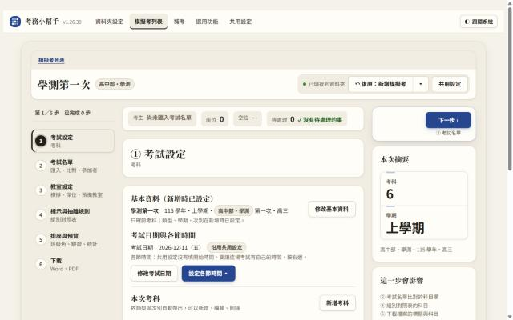
P05 學測第一次（1280）
狀態基本資料／考試日期與各節時間（沿用共用設定、各節時間設定、修改考試日期）／考科表（新增、編輯、刪除）／本次摘要卡對應稿原型.html；每場考試開始時間稿 v2.79；G修正總稿
與稿不一致／備註：未逐項核對；展開「設定各節時間」的面板未截。
P06考試步驟 ② 考試名單
route: step 2
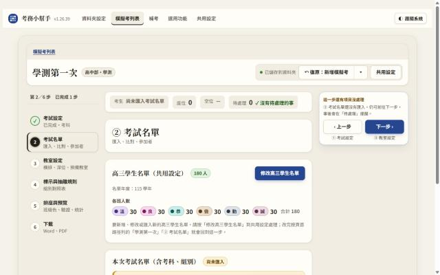
P06 尚未匯入（1280）
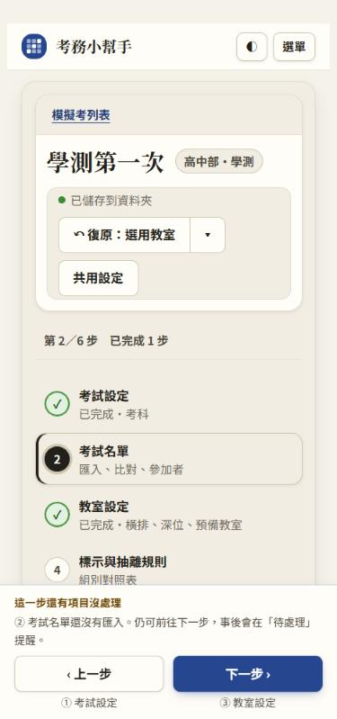
P06 尚未匯入（375）
狀態尚未匯入／欄位對應／匯入預覽與比對結果／問題列與已處理／重複匯入／錯誤／各班人數／再匯入確認對應稿原型.html；G16-G34介面總稿；對稿-I-2a與I-3.md
與稿不一致／備註：只截「尚未匯入」。匯入需選 Excel 檔，瀏覽器自動化無法選檔，其餘狀態未截。375 步驟導覽佔滿首屏，內容要下捲（觀察，非缺陷判定）。
P07考試步驟 ③ 教室設定
route: step 3
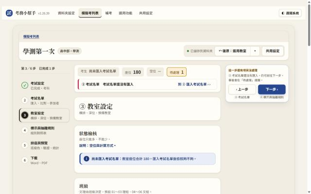
P07 尚未匯入名單時（1280）
狀態狀態檢核／班級教室（橫排、深位、座位編輯）／預備教室／預備教室排座方式／座位上限提示對應稿G16-G34介面總稿；G修正總稿；設計員改稿包小稿 v2.70（座位上限）
與稿不一致／備註：只截未匯入名單的狀態；座位編輯面板、容量不足、預備教室未截。
P08考試步驟 ④ 標示與抽離規則
route: step 4
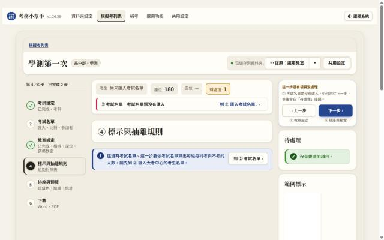
P08 尚未匯入名單時（1280）
狀態組別對照表／各科標示／抽離規則／範例標示（右欄）對應稿座位表標示與統計表稿 v2.76；原型.html
與稿不一致／備註：只截未匯入名單狀態。
P09考試步驟 ⑤ 排座與預覽
route: step 5
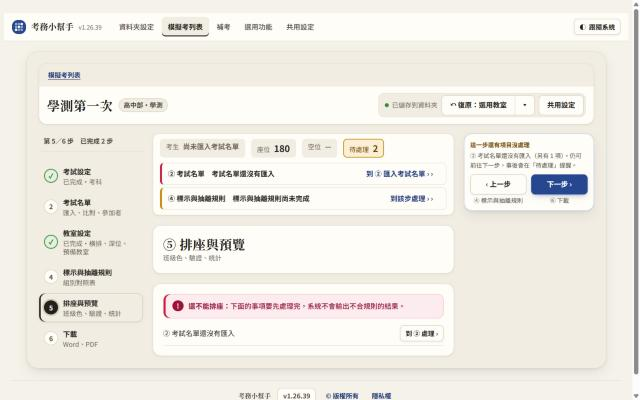
P09 還不能排座（1280）
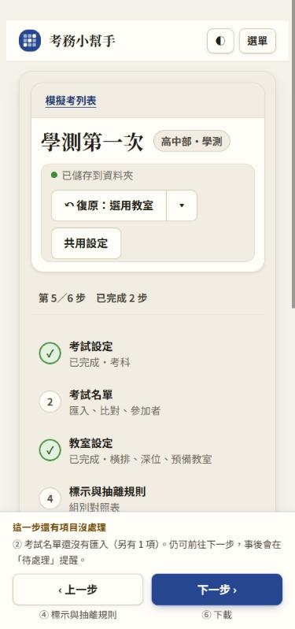
P09 還不能排座（375）
狀態還不能排座（待處理清單）／班級色／驗證／座位表預覽（班級教室、預備教室）／統計對應稿原型.html；座位表標示與統計表稿 v2.76；對帳與預覽小稿 v2.77
與稿不一致／備註：只截擋下狀態；排好座位的預覽未截。
P10考試步驟 ⑥ 下載（含考前對帳）
route: step 6
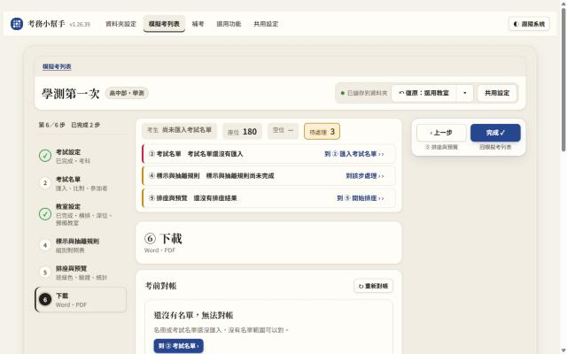
P10 還沒有名單、無法對帳（1280）
狀態考前對帳（逐項通過／警示展開／總帳）／下載 Word、PDF／標籤預覽對應稿G35考前對帳稿 v2.78；對帳與預覽小稿 v2.77；匯出檔樣式規格稿
與稿不一致／備註：只截未匯入名單狀態；對帳明細與下載完成未截。
P11分科考試步驟 ③④⑤（教室與自習空間、排座模式與方案、時段教室與座位）
route: step 3–5（分科）
狀態教室與自習空間／少教室優先、少移動優先方案比較／時段教室與座位／自習參考座位對應稿G16-G34介面總稿；G36自習參考座位稿 v2.68；DESIGN §10.14
與稿不一致／備註：未截（分科需名單與報名資料）。D135：考生與自習生不同室。
狀態預備教室名單／抽離考試與抽離自習對應稿G16-G34介面總稿；原型.html
與稿不一致／備註：未截（需已排座的考試）。
狀態輸入條件／查詢結果對應稿原型.html（選用功能設定頁 C 區）
與稿不一致／備註：未截（需先在選用功能啟用，且要有考試資料）。
P14共用設定 · 學生名單
route: settings roster
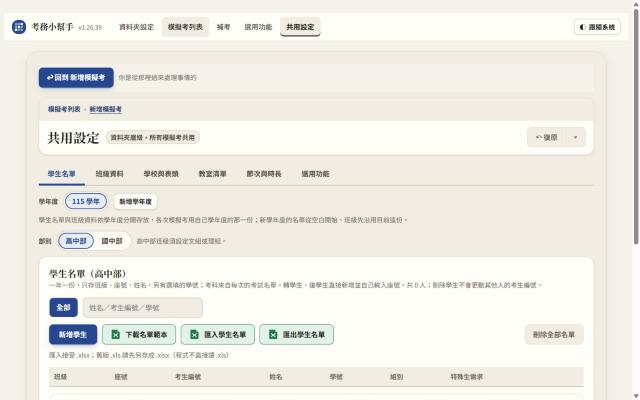
P14 1280
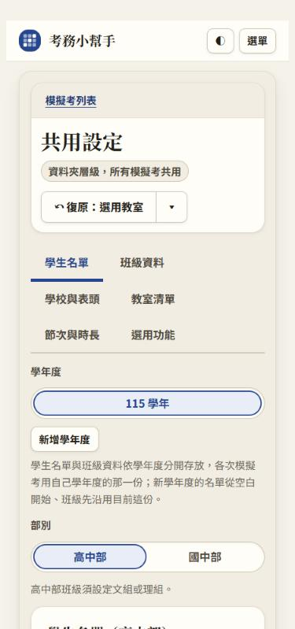
P14 375
狀態學年度／部別／名單表／匯入、匯出、下載範本／刪除全部／新增學年度對應稿模擬考列表與設定畫面包稿 v2.74
與稿不一致／備註：未逐項核對。
P15共用設定 · 班級資料
route: settings classes
狀態班級表／新增班級／班級色／危險操作區（重置）對應稿模擬考列表與設定畫面包稿 v2.74
與稿不一致／備註：未逐項核對。
P16共用設定 · 學校與表頭
route: settings school
狀態學校名稱／座位表表頭／標籤表頭／標籤注意事項／預設紙張對應稿原型.html；G修正總稿
與稿不一致／備註：未逐項核對。
P17共用設定 · 教室清單
route: settings rooms
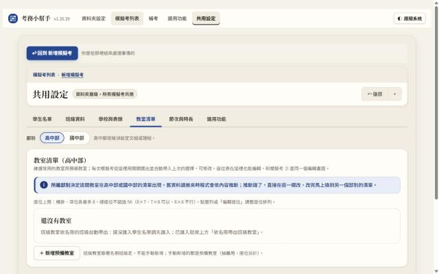
P17 1280（沒有名單時）
狀態沒名單的提示／班級教室列／預備教室／座位編輯對應稿設計員改稿包小稿 v2.70；G16-G34介面總稿
與稿不一致／備註：未逐項核對。
P18共用設定 · 節次與時長
route: settings sched
狀態學測第 1、2 次／第 3、4 次／分科／會考四份；每天一欄、時段拖拉與 ↑↓；還原預設對應稿原型.html（v2.18 時間表式）；設計員改稿包小稿 v2.70（還原預設）
與稿不一致／備註：未逐項核對。
P19選用功能
route: settings features
狀態領卷清單／考生查詢／出缺席記錄表／會考快速模式等的啟用開關對應稿原型.html（C 區）
與稿不一致／備註：未逐項核對。
P20補考 · 場次列表
route: makeup
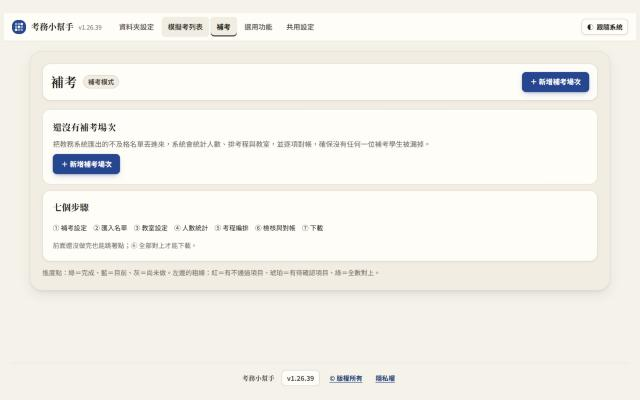
P20 空列表（1280）
狀態空列表／有場次（卡片：紅、琥珀、綠進度）／刪除對應稿補考稿 v2.84（S-1、S-2）
與稿不一致／備註：【已知不一致】空白狀態現行畫面頁首右上與空白卡內各有一顆「＋ 新增補考場次」（圖為此狀態）；稿 v2.84 已改為只留空白卡內一顆、拿掉頁尾「七個步驟」卡，待施工 K 實作（#505）。
P21補考 · 新增補考場次
route: makeupNew
狀態場次名稱／學年度／學期／第一個補考場次提示對應稿補考稿 v2.81（S-2）
與稿不一致／備註：未逐項核對。
P22補考 · 七步驟工作區與儀表板
route: makeupStep
狀態① 補考設定／② 匯入名單／③ 教室設定（型別按鈕：一般／特別，D180）／④ 人數統計／⑤ 考程編排／⑥ 核對與對帳／⑦ 下載；儀表板（改用 Drawer 側滑，D176④）對應稿補考稿 v2.81（S-3～S-9）；D176、D180
與稿不一致／備註：未截（需補考場次與教務系統名單）。③ 型別按鈕稿已改「一般／特別」，程式要等 PR #499 併入；儀表板目前用 Modal，Drawer 元件已做好，等 PR #499 後另包換上。
狀態全文（內捲）／回上頁對應稿（無專屬稿）
與稿不一致／備註：—
狀態中文／English version／回上頁對應稿不支援瀏覽器提示稿 v2.65（D53 例外）；（無專屬稿）
與稿不一致／備註：—
全站共用元件（每頁都會出現）
| 標號 | 元件 | 說明 | 對應稿 |
|---|
| G1 | 全站頁首與頁尾（AppBar、導覽、外觀切換、版號、版權、隱私） | 每頁頂端／底端，含手機的「選單」與外觀切換鈕 | 頁首方案-v2.29；DESIGN §10.7 |
| G2 | 對話框 Modal／ConfirmModal | 刪除確認、重置確認、關於本程式等（全站只一種畫法，D165） | 設計系統.html（元件章） |
| G3 | Drawer 側滑面板（新，稿 v2.80） | 只用在補考儀表板；≥768 右側滑出，<768 底部面板 | 設計系統.html #v280；DESIGN §10.44.3 |
本版限制（誠實列出）
- 只有「首屏」截圖：截圖工具只截目前視窗，不是整頁長圖；長頁（共用設定、步驟頁）下半部要看請開實際網站，標注時請講標號加「下半部」。
- 寬度只有 1280 與 375；平板 768 未截。
- 沒有匯入名單的狀態都未截：匯入要選 Excel 檔，瀏覽器自動化無法選檔；因此步驟 ②～⑥ 只有「尚未匯入／被擋下」的狀態，排好座位、對帳明細、下載完成等未截，已在各頁備註。
- 「與稿不一致」只列已確認的項目（P04 補考卡兩項）；其餘頁寫「未逐項核對」，不假裝比對過。若要逐項核對，請在上面標注想看的頁，下一輪針對該頁做對稿。
- 截圖用本機開發站的「記憶體示範模式」（暫時修改、已還原、沒有進版控），資料是虛構的示範生與範例高中。